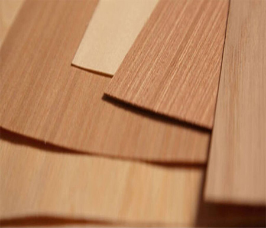
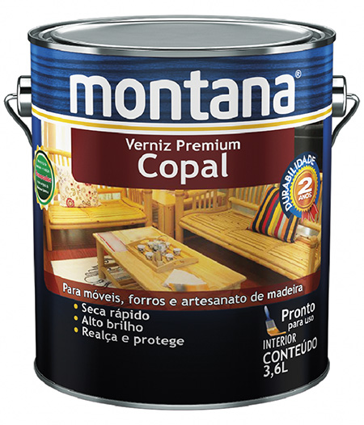
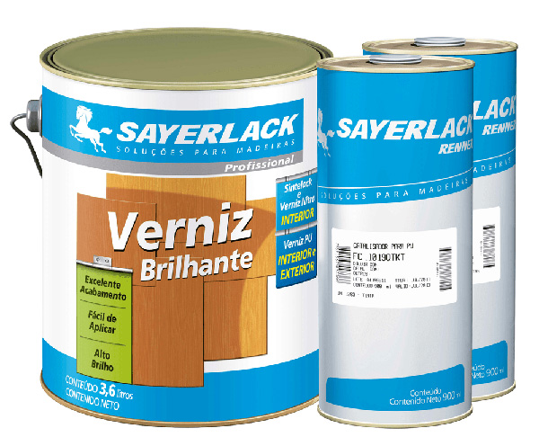
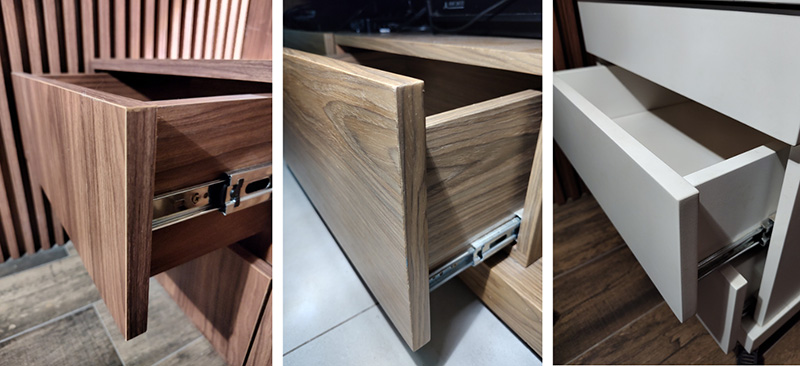

Quando se trata de criar espaços que refletem personalidade, estilo e funcionalidade, a seleção de materiais, texturas e cores para os móveis desempenha um papel fundamental. Portanto, ter pleno conhecimento dos tipos de acabamentos disponíveis no mercado é de extrema importância para o profissional de design de interiores.
A seguir, confira as principais características de cada um dos acabamentos para ajudá-lo a tomar as melhores decisões na hora de detalhar o móvel para o seu cliente.
O laminado melamínico é um material amplamente utilizado na indústria de móveis e na construção para revestir superfícies, como móveis, bancadas, painéis, portas e outros elementos. Existem dois diferentes tipos de laminados melamínicos, os laminados de alta pressão e os laminados de baixa pressão, cada um com características específicas como explicado a seguir:
Composição do laminado melamínico de alta pressão
Fonte: Senac EAD 2023
A imagem mostra que o laminado melamínico de alta pressão é composto de várias camadas. A primeira camada é formada pela base de aplicação que será MDF (medium density fiberboard), MDP (medium density particleboard), aglomerado ou compensado de madeira. A segunda camada é composta de várias camadas de papel para sustentação. A terceira camada é o papel decorativo com resina. Por último, o material recebe um filme de proteção para a superfície do produto.
O laminado melamínico de alta pressão (high-pressure laminate – HPL) é fabricado utilizando um processo de alta pressão e alta temperatura. Ele consiste em várias camadas de papel impregnado com resina melamínica, que são prensadas sob alta pressão para formar uma folha sólida e resistente. A superfície do laminado recebe um filme de proteção que aumenta a resistência do revestimento e pode ser decorada com uma ampla variedade de padrões, cores e texturas, tornando-o uma escolha versátil para revestimentos de móveis, bancadas e paredes.
O HPL é conhecido por sua alta durabilidade, resistência a arranhões, manchas e impactos.

Algumas amostras de laminado melamínico de alta pressão
Fonte: Senac EAD 2023
A imagem tem 63 quadradinhos de amostras de laminado melamínico de alta pressão nos mais variados tipos de cores e texturas que imitam madeira, pedras e tramados.
Composição do laminado melamínico de baixa pressão
Fonte: Senac EAD 2023
A imagem mostra o laminado melamínico de baixa pressão sendo composto de duas camadas. A primeira camada é formada pela base de aplicação, que será um MDF, MDP ou aglomerado de madeira, e a segunda camada é composta de papel decorativo.
O laminado melamínico de baixa pressão (BP) é produzido com um processo de menor pressão e temperatura em comparação com o HPL. Nesse processo, o papel decorativo (melamínico) é prensado diretamente sobre a base, que pode ser uma chapa de MDF, MDP ou aglomerado. Após a impregnação do papel com resina ocorre a montagem e o conjunto é levado a uma prensa plana na qual sofre os efeitos de temperatura e pressão, formando um corpo único e inesperável. É o material mais amplamente utilizado na indústria moveleira e por marceneiros.

Algumas amostras de laminado melamínico de baixa pressão
Fonte: Senac EAD 2023
A imagem mostra oito peças de amostras de laminado melamínico de baixa pressão com variados tipos de cores e texturas que imitam madeira e tramados.
Vantagens
Desvantagens
O finish foil (traduzido como “folha de acabamento”, considerado também como “papel de revestimento”) não é um laminado melamínico propriamente dito, mas sim uma folha de papel decorativa impregnada com resina melamínica. É aplicado sobre substratos de madeira como MDF, MDP ou aglomerados por meio de um processo de laminação à baixa pressão.
O finish foil é frequentemente utilizado como uma superfície decorativa em móveis, portas e painéis de mobiliários mais populares. Embora possa oferecer uma variedade de cores e texturas, acaba sendo menos resistente do que outras opções.
Lâminas de madeira são finas folhas de madeira obtidas a partir do tronco de uma árvore ou blocos de madeira. Elas têm uma ampla gama de aplicações na indústria mobiliária e design de interiores devido à sua beleza natural, à textura única e às cores características, que variam de acordo com a espécie da árvore. Basicamente, a lâmina de madeira consiste em uma folha fina de madeira, cortada diretamente do tronco da árvore, preservando todas as suas características naturais, como textura, grãos, nós, veios e cores. Isso a torna ideal para a fabricação de móveis de alta qualidade e elementos de decoração.

Lâmina de madeira
Fonte: Marcato (2022)
Lâminas de madeira bruta antes da execução de um mobiliário.
Normalmente a lâmina de madeira é colada sobre um substrato, como MDF ou aglomerado. Assim, elas oferecem a beleza da madeira natural com a estabilidade do substrato e são usadas em móveis de alta qualidade, portas e armários, podendo também ser aplicadas em superfícies, painéis de parede, tetos e outros elementos de design de interiores para adicionar um toque natural ao ambiente. A escolha do tipo de lâmina de madeira depende das necessidades específicas do projeto, do orçamento e das preferências estéticas do designer.
Vantagens
Desvantagens
A seladora é um tipo de produto utilizado no acabamento de superfícies em madeira. Sua principal função é preparar a madeira para a aplicação de acabamentos finais, como vernizes, óleos ou tintas. A seladora desempenha vários papéis importantes no processo de acabamento de madeira.
A madeira natural tem poros que podem absorver umidade e produtos de acabamento de forma irregular. A seladora preenche esses poros e cria uma superfície uniforme, ajudando a evitar manchas e imperfeições.
Ao criar uma superfície mais uniforme e lisa, a seladora melhora a aderência dos acabamentos subsequentes, como vernizes e tintas.
A seladora também oferece proteção adicional à madeira, ajudando a prevenir o desgaste causado pela exposição à umidade, à poeira, à sujeira e ao uso cotidiano. Isso prolonga a vida útil dos móveis e das superfícies de madeira.
Em algumas situações, a seladora pode realçar a cor natural da madeira, tornando seus tons mais ricos e profundos.
Existem diferentes tipos de seladoras disponíveis, incluindo seladoras à base de água e à base de solvente. Aqui estão algumas considerações sobre cada tipo:
Seladora à base de solvente da marca Montana
Fonte: Montana Química (c2020a)
Lata de seladora, igual a uma lata de tinta, com 3,6 litros de quantidade, da marca Montana. A lata está fechada e tem uma alça.
A escolha da seladora e a técnica de aplicação podem variar dependendo do projeto e das preferências pessoais, mas, em geral, a seladora desempenha um papel crucial na preparação da madeira para um acabamento final de qualidade e durabilidade.
O verniz é um tipo de acabamento utilizado em superfícies de madeira e outros materiais porosos para protegê-los, realçar sua beleza natural e proporcionar durabilidade. Ele é uma mistura de resinas ou polímeros sintéticos, solventes (ou água em vernizes à base de água) e, às vezes, pigmentos ou corantes para adicionar cor. Existem diferentes tipos de vernizes disponíveis e eles são amplamente utilizados em móveis, pisos, madeira compensada e uma variedade de outras aplicações de madeira. Confira algumas características e funções do verniz:
Uma das principais funções do verniz é proteger a madeira contra danos causados pela umidade, insetos, poeira, raios UV (ultravioleta) e uso diário. Ele forma uma camada protetora na superfície da madeira, ajudando a evitar que a umidade penetre e cause danos como inchamento ou apodrecimento.
O verniz realça a aparência da madeira, tornando sua textura e seus nós mais visíveis. Ele pode dar à madeira uma aparência mais rica e profunda, realçando sua cor natural.
O verniz é conhecido por sua durabilidade e resistência ao desgaste. Ele é usado com frequência em móveis e pisos, nos quais a resistência a arranhões e impactos é importante.
Os vernizes estão disponíveis em uma variedade de acabamentos, desde fosco até acetinado e brilhante. Isso permite que as pessoas escolham o acabamento que melhor se adapte ao seu gosto estético.
O verniz pode ser aplicado com um pincel, rolo ou pulverizador, dependendo da preferência e do projeto. É importante aplicar várias camadas finas, lixando-se levemente entre as camadas para se obter um acabamento suave e uniforme.
Existem dois tipos principais de vernizes: vernizes à base de solvente e vernizes à base de água. Os vernizes à base de solvente geralmente têm uma resistência superior e são usados em projetos que exigem maior durabilidade. Os vernizes à base de água são uma opção mais ecológica, com menos emissões de compostos orgânicos voláteis (COVs) e odor reduzido, mas podem ser menos resistentes em algumas situações.

Verniz da marca Montana
Fonte: Montana Química (c2020b)
Lata de verniz, igual a uma lata de tinta, com 3,6 litros de quantidade, da marca Montana. A lata está fechada e tem uma alça.
Em resumo, o verniz é um acabamento versátil e amplamente utilizado, que oferece proteção e realce estético a superfícies de madeira e outros materiais porosos. A escolha do tipo de verniz e do acabamento depende das necessidades do projeto e das preferências pessoais em relação à aparência final. Certifique-se sempre de seguir as instruções do fabricante ao aplicar verniz para obter os melhores resultados.
PU é uma abreviação que se refere a “poliuretano”. O poliuretano é um tipo de polímero amplamente utilizado em diversas aplicações devido às suas propriedades versáteis. No contexto de acabamentos para madeira, o PU geralmente se refere a vernizes à base de poliuretano, também conhecidos como vernizes PU. Os vernizes PU são uma categoria de acabamento que usam poliuretano como base principal. Eles são populares devido à sua excelente durabilidade e resistência a desgastes, produtos químicos, água e raios UV. Os vernizes PU estão disponíveis em várias formas, como vernizes à base de solvente e vernizes à base de água, oferecendo opções para diferentes necessidades e preferências.

Verniz PU e duas latas de catalisadores da marca Sayerlack
Fonte: Casa Toni (c2021)
Lata de verniz PU brilhante, igual a uma lata de tinta, com 3,6 litros de quantidade, da marca Sayerlack. A lata está fechada e tem uma alça. Ao lado da lata estão outras duas latas de 900 ml de catalisador, para uso conjunto ao verniz.
Vantagens dos vernizes PU
Desvantagens do verniz PU
A laca é um tipo de acabamento muito utilizada no design de interiores. Esse revestimento é conhecido por sua aparência lustrosa e sua capacidade de realçar a cor e o brilho das superfícies, dando um aspecto muito sofisticado ao projeto.
Existem três tipos principais de laca:
É uma laca tradicional à base de nitrocelulose que é frequentemente usada em acabamentos de móveis, instrumentos musicais e objetos de decoração. Ela seca rapidamente, criando um acabamento brilhante e suave. No entanto, ela é sensível a produtos químicos e não é tão resistente à umidade quanto outras lacas.
A laca de poliuretano é altamente resistente a riscos, produtos químicos e umidade. Ela cria um acabamento durável e brilhante e é frequentemente usada em móveis de alta qualidade, pisos de madeira e superfícies que precisam de proteção extra.
A laca acrílica é à base de água e é conhecida por seu baixo odor e menos emissão de compostos orgânicos voláteis (COVs). Ela é usada em aplicações nas quais a preocupação com o ambiente é relevante e em projetos de interiores, como móveis e objetos de decoração.
O processo de aplicação da laca geralmente envolve a preparação da superfície, a aplicação da laca com pincel, rolo ou pulverizador em várias camadas finas e a secagem adequada entre as camadas. A superfície pode ser lixada entre as camadas para obter um acabamento suave e uniforme. A laca é valorizada por sua capacidade de criar acabamentos brilhantes e duráveis, que podem variar do fosco ao alto brilho. Ela é frequentemente escolhida para móveis de alta qualidade e itens de decoração devido à sua variedade na opção de cores.
Vantagens
Desvantagens
Para encerrar, confira três tipos de revestimentos aplicados em um gaveteiro de MDF. Da esquerda para a direita, o acabamento da gaveta em MDF é feito em laminado melamínico. A segunda imagem mostra a frente da gaveta em MDF com acabamento em lâmina de madeira. Na terceira imagem, a frente da gaveta em MDF tem acabamento em laca.

Revestimentos aplicados em um gaveteiro em MDF
Fonte: Senac EAD (2023)
A imagem mostra três gaveteiros em MDF revestidos com acabamentos diferentes. O primeiro apresenta frente da gaveta em MDF com acabamento em laminado melamínico. O segundo apresenta frente da gaveta em MDF com acabamento em lâmina de madeira e, o terceiro, frente da gaveta em MDF com acabamento em laca.
O conhecimento dos diferentes tipos de acabamentos para móveis garante aos profissionais de design de interiores a segurança em projetar mobiliários harmoniosos, duráveis e personalizados de acordo com as preferências dos clientes. Além disso, estar atualizado com as tendências e inovações em acabamentos é um aspecto importante da profissão.